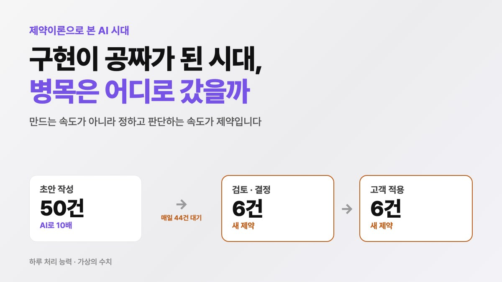

구현이 공짜가 된 시대, 병목은 어디로 갔을까 — 제약이론으로 본 진짜 역량

1. 구현이 빨라지자 병목이 옮겨 갔습니다
엘리야후 골드랫의 제약이론(Theory of Constraints, TOC)에 따르면, 여러 단계로 이어진 일의 전체 산출량은 가장 느린 한 단계, 곧 제약이 결정합니다. 지난 글 「가장 약한 고리부터」에서는 이 원리로 AX 변화관리를 설명했습니다.
이번 글은 그다음 질문을 다룹니다. AI가 코드 작성, 문서 초안, 데이터 분석 같은 구현과 실행에 드는 비용과 시간을 크게 줄였습니다. 그렇다면 제약은 어디로 옮겨 갔을까요. 결론부터 말하면 제약은 기계에서 사람과 조직으로, 그것도 무엇을 만들지 정하고, 판단을 내리고, 고객과 신뢰를 쌓는 영역으로 옮겨 갔습니다.
2. 만드는 속도와 결정하는 속도
제약이론의 핵심 원칙 가운데 하나는 이렇습니다. 제약이 아닌 단계를 아무리 빠르게 해도 전체 성과는 늘지 않고, 제약 앞에 처리되지 않은 일만 쌓입니다.
기획안을 만들어 고객에게 전달하는 팀을 예로 들어 보겠습니다. 단계마다 하루에 처리할 수 있는 건수가 다릅니다.
| 하루 처리 능력 | 초안 작성 | 검토·결정 | 고객 적용 | 하루에 끝나는 건수 | 하루에 쌓이는 건수 |
|---|---|---|---|---|---|
| AI 도입 전 | 5건 | 6건 | 6건 | 5건 | 0건 |
| 초안 작성에 AI 도입 | 50건 | 6건 | 6건 | 6건 | 44건 |
이해를 돕기 위한 가상의 수치입니다. 주황색은 각 상황의 제약입니다.
초안 작성이 열 배 빨라졌지만 하루에 끝나는 일은 5건에서 6건으로 늘었을 뿐입니다. 대신 검토를 기다리는 초안이 매일 44건씩 쌓입니다. AI는 몇 초 만에 기획안, 코드, 마케팅 시안을 내놓지만, 이를 검토하고 승인하고 책임지는 사람의 주의력과 결정 속도는 그대로이기 때문입니다.
조사 결과도 이런 흐름을 보여 줍니다. 맥킨지의 2025년 조사에서 응답 기업의 88%가 한 가지 이상의 업무에 AI를 정기적으로 쓴다고 답했습니다. 그러나 영업이익(EBIT)의 5% 이상이 AI에서 나온다고 답한 고성과 기업은 약 6%였고, 2026년 조사에서도 이 비율은 그대로였습니다. 소프트웨어 개발에서도 마찬가지입니다. 스택 오버플로는 코드 생성이 더는 제약이 아니며, 산출물이 늘어난 만큼 검토할 범위가 넓어져 검토와 판단, 그리고 제품·디자인·법무·보안과의 조율이 새 제약이 되었다고 정리합니다.
많은 회사가 제약이 아닌 곳의 속도만 높여, 검토를 기다리는 산출물 더미를 쌓고 있습니다.
3. 새 제약 세 가지
누구나 비슷한 실행 능력을 갖추게 된 뒤에 남는 제약은 크게 세 가지입니다.
- 상상력과 문제 정의: 「어떻게 만들까」가 아니라 「무엇을, 왜 만들어야 하는가」를 떠올리고 틀을 잡는 능력입니다. 맥킨지도 개발이 빨라지면 무엇을 만들지 정하는 일이 제약이 된다고 말합니다. 혁신의 한계를 결정하는 것이 개발 역량에서 회사의 상상력으로 바뀐 셈입니다.
- 비판적 판단력: AI가 내놓은 수많은 대안 가운데 무엇을 버리고, 어떤 위험을 감수할지 정하는 능력입니다. 부분이 아니라 시스템 전체를 보고 내리는 판단이어야 합니다.
- 고객이 받아들이는 속도와 신뢰: 내부에서 아무리 빨리 만들어도 고객이 새 기능을 익히고 변화를 받아들이는 속도는 따로 있습니다. 이 속도와 그 바탕이 되는 신뢰가 마지막 제약이 됩니다.
4. 다섯 단계로 본 전략 방향
제약이론은 제약을 다루는 과정을 찾기, 최대 활용, 종속, 강화, 반복의 다섯 단계로 제시합니다. 이를 AI 시대의 회사 운영에 적용하면 네 가지 방향이 나옵니다.
| 제약이론 | 전략 방향 | 할 일 |
|---|---|---|
| 찾기 · 최대 활용 | 덧붙이기가 아니라 업무 흐름 재설계 | 사람의 판단이 꼭 필요한 지점을 찾고, 나머지 흐름을 에이전트 중심으로 다시 짭니다 |
| 종속 | 제약의 속도에 맞추고 일을 작게 쪼개기 | 결정권자와 고객이 소화할 수 있는 크기로 나누고, 완료 기준을 먼저 정합니다 |
| 강화 | 시스템을 설계하는 사람에게 권한 집중 | 전체를 보고 문제를 다시 정의하는 사람에게 에이전트 권한과 자원을 몰아 줍니다 |
| 반복 | 산출물이 아니라 고객 가치와 학습 측정 | 고객 반응을 확인하는 주기를 짧게 하고, 제약이 옮겨 가면 다시 찾습니다 |
덧붙이기가 아니라 업무 흐름 재설계
사람 중심의 승인·보고 체계 위에 AI 도구만 얹으면, AI가 만든 결과물을 사람이 하나하나 확인하느라 병목이 오히려 심해집니다. 맥킨지 조사에서 고성과 기업은 AI를 도입하면서 업무 흐름을 근본부터 다시 설계한 비율이 다른 기업의 약 세 배였습니다.
제약의 속도에 맞추고 일을 작게 쪼개기
다섯 단계 가운데 가장 실행하기 어려운 것이 종속, 곧 제약의 속도에 맞춰 나머지 단계의 속도를 늦추는 일입니다. AI로 무엇이든 만들 수 있다고 해서 프로젝트를 마구 벌이면 안 됩니다. 결정권자와 고객이 소화할 수 있는 크기로 일을 쪼개고, 완료 기준을 먼저 정해 사람이 판단해야 할 핵심 지점만 남겨야 합니다.
산출물이 아니라 고객 가치와 학습 측정
코드 줄 수나 보고서 건수 같은 생산량 지표는 의미를 잃었습니다. 실험과 배포가 빨라진 만큼 고객 반응을 확인하는 주기를 짧게 설계하고, 고객이 변화를 쉽게 받아들이도록 초기 적응을 돕고 관계를 쌓는 데 자원을 집중해야 합니다.
시스템을 설계하는 사람에게 권한 집중
모든 직원에게 같은 AI 도구를 준다고 같은 가치를 만들어 내지는 않습니다. 전체 시스템을 보고 문제를 다시 정의할 수 있는 사람을 찾아 에이전트 권한과 자원을 몰아 주고, 이들이 설계한 방식이 조직 전체로 퍼지게 해야 합니다.
5. 빌린 역량과 내 것이 된 역량
AI의 도움을 받으면 그럴듯한 결과물을 빠르게 만들 수 있습니다. 그래서 AI에게 잠시 빌린 역량과 조직과 개인 안에 쌓인 역량을 구분해야 합니다. 앞의 것을 가짜 역량, 뒤의 것을 진짜 역량이라고 부르겠습니다.
| 구분 | 가짜 역량 (AI에게 빌린 역량) | 진짜 역량 (새 제약을 넘는 역량) |
|---|---|---|
| 본질 | 결과물을 만드는 속도 초안, 코드, 디자인, 분석 보고서를 빠르게 많이 뽑아내는 능력 | 문제 정의와 시스템 설계 무엇이 진짜 문제인지 파악하고, AI가 따를 규칙과 기준을 세우는 능력 |
| 차별화 | 비슷해질 위험 누구나 같은 모델과 프롬프트를 쓰면 얻을 수 있는 평균적인 산출물 | 고유한 브랜드와 맥락 회사의 철학, 자체 데이터, 고객과의 깊은 신뢰에서 나오는 대체할 수 없는 차이 |
| 의사결정 | 도장만 찍는 승인 AI가 어떻게 그 답에 이르렀는지 모른 채 승인하거나 겉만 고치는 태도 | 비판적 판단과 예외 처리 AI의 가정을 의심하고, 서로 부딪히는 조건 사이에서 위험을 감수하며 최종 책임을 지는 판단 |
| 역량이 쌓이는 방식 | 판단을 맡길수록 판단 능력을 잃는 구조 실행을 모두 AI에 맡긴 탓에, 예외나 위기가 닥치면 원리를 몰라 멈춰 서는 상태 | 배움이 되돌아오는 구조 AI가 실행한 결과를 사람이 배우는 재료로 삼아 판단 기준을 계속 높여 가는 구조 |
구현이 공짜에 가까워지면 AI를 잘 다루는 능력, 곧 프롬프트와 도구 활용 능력도 점차 기본기가 됩니다. 누구나 갖추는 능력으로는 경쟁에서 앞서기 어렵습니다.
6. 유엔진은 새 제약을 이렇게 다룹니다
새 제약 세 가지는 도구만으로 풀리지 않습니다. 다만 사람이 판단에 집중하도록 일의 흐름을 짜고, 배운 것이 조직에 남게 하는 데에는 도구와 방법이 필요합니다. 유엔진의 제품과 프로그램을 이 글의 순서에 맞춰 정리하면 다음과 같습니다.
| 이 글의 과제 | 유엔진의 제품과 프로그램 |
|---|---|
| 무엇을, 왜 만들지 정하기 | 업무를 사람과 에이전트의 몫으로 나눠 보는 Agent Storming 워크숍, 밸류 스트림으로 막히는 곳을 찾는 AX 전환 프로그램의 진단 단계 ↗ Agent Storming 워크숍 ↗ 병목 찾기 |
| 사람의 판단이 필요한 지점만 남기기 | Process GPT는 사람의 최종 결정이 필요한 곳에 승인 단계를 두고, 함께 맡은 단계에서는 에이전트가 초안을 쓰고 사람이 확인·제출합니다 ↗ 조직도 기반 에이전트 매핑 ↗ 에이전트가 맡은 단계 실행 |
| 판단 기준을 먼저 정하기 | 「정답률 60% 이상이면 승인」 같은 업무 규칙을 결정표(DMN)로 관리해 에이전트가 어느 경로로 진행할지 명확한 규칙에 따라 판단하도록 통제합니다 ↗ DMN 비즈니스 규칙 |
| 도장만 찍는 승인 피하기 | 실행 프로파일러로 에이전트가 왜 그렇게 판단했는지를 언어 모델 호출과 도구 호출까지 따라가 확인합니다 ↗ 실행 프로파일러 |
| 배움이 되돌아오게 하기 | 같은 업무의 피드백이 쌓이면 스킬 개선안을 만들어 사람의 승인을 받고, 변경 이력을 남깁니다 ↗ 피드백으로 다듬는 에이전트 업무와 스킬 |
| 산출물이 아니라 흐름 측정하기 | 전체 소요 시간을 사람의 판단, 에이전트의 실행, 대기로 나눠 어디가 제약인지 보여 줍니다 ↗ 리드타임 분해 |
업무 흐름을 다시 설계하고 역할을 바꾸는 일은 AX 전환 프로그램의 프로세스 혁신 단계에서, 측정하고 제약을 다시 찾는 습관은 변화관리 단계에서 다룹니다.
7. 맺으며: 새 병목을 관리하는 회사
구현이 공짜에 가까워진 시대의 경쟁력은 세 가지 새 병목을 얼마나 잘 관리하느냐에 달려 있습니다.
- 상상력: 남들이 보지 못하는 고객의 결핍을 알아보는 힘
- 판단력: AI가 만든 수만 개의 결과물 가운데 하지 말아야 할 것을 골라내는 힘
- 관계 역량: 기술의 속도가 아니라 고객의 호흡에 맞춰 신뢰를 쌓아 가는 힘
우리 회사의 제약이 지금 어디에 있는지 함께 찾고 싶다면 AX 전환 프로그램을 살펴보세요. 상담을 원하시면 문의하기로 연락 주세요.
참고 자료
- Theory of constraints — Wikipedia
- The state of AI in 2025: Agents, innovation, and transformation — McKinsey
- The state of AI in 2026: On the road to ROI — McKinsey
- AI-powered software development: How technology is rewriting the rules — McKinsey
- The new bottleneck — Stack Overflow Blog
- 가장 약한 고리부터 — 제약이론으로 짜는 AX 변화관리
- AI 파일럿은 왜 실무에서 멈출까 — Process GPT 접근이 필요한 이유